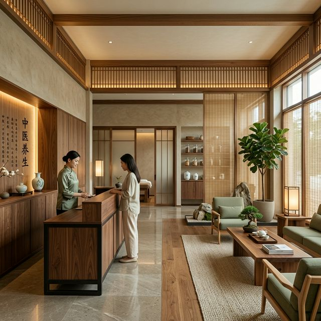
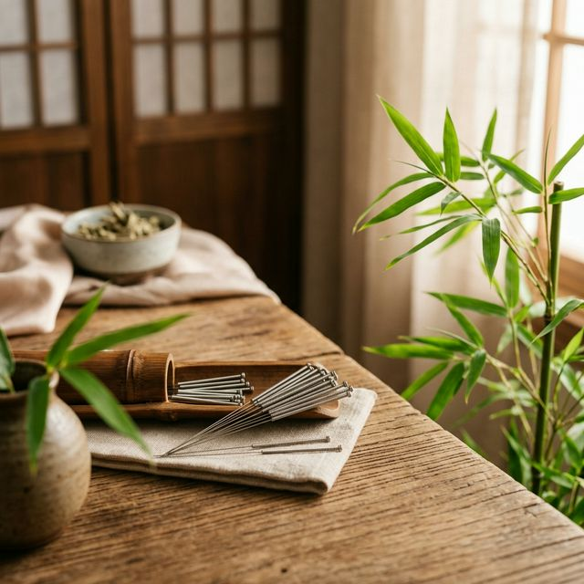
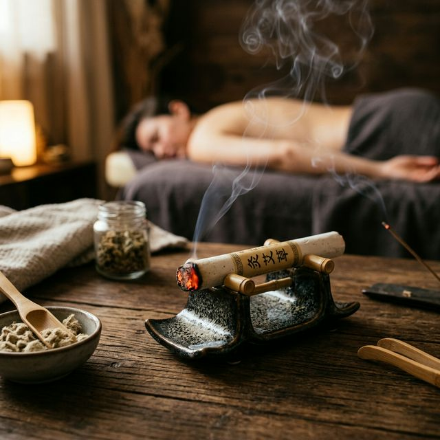

融合自然之道与传统中医精粹，为您带来由内而外的宁静与放松
在这里，每一缕馨香，每一根银针，都承载着千年的智慧。我们为您提供最正宗的中医理疗服务，让身心在静谧的氛围中回归平衡。

疏通经络，调理气血。通过精准的穴位刺激，唤醒身体的自愈能力，释放深层压力与疲惫，恢复身体的自然循环机能。
借纯阳艾火之温和热力，温通经脉，驱寒除湿。在淡淡的艾香之中，感受由表及里的温暖贯注，舒缓紧绷神经，享受宁静时光。
